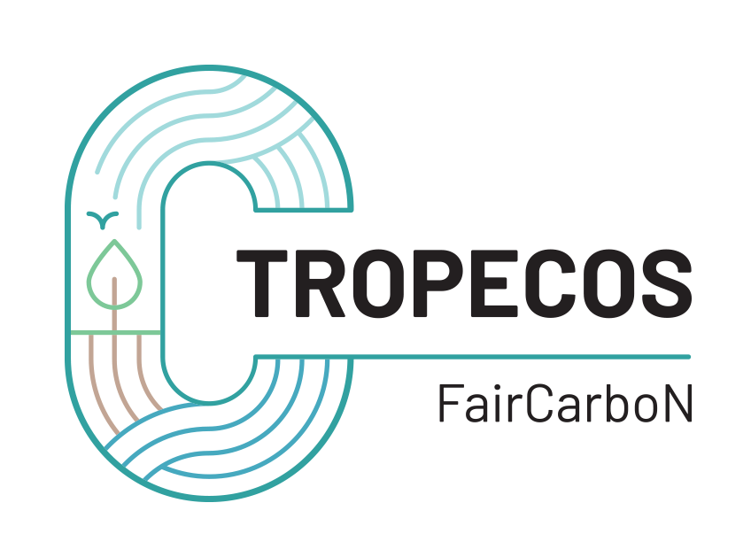
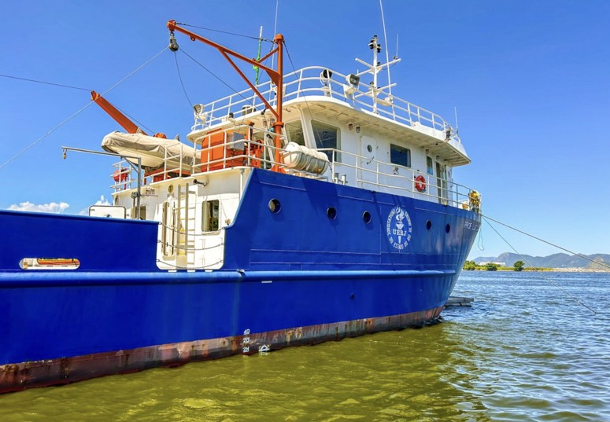
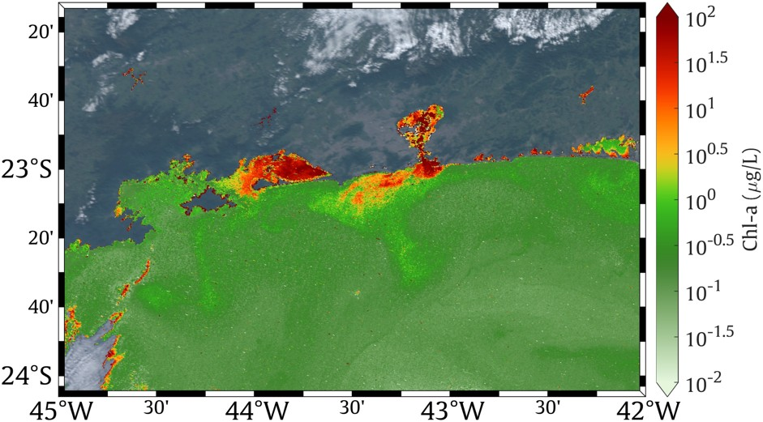

Ongoing projects

TROPECOS
Tropical estuaries and mangroves in the global carbon cycle.
The TROPECOS project, funded by France 2030 is part of the PEPR Research Program FairCarboN and involves a scientific community working on the coastal carbon cycle in three French overseas territories (French Guiana, Guadeloupe, New Caledonia) and in two French international research structures with strong, long-standing partnerships: Vietnam (IRD LMI LECZ-CARE) and Brazil (CNRS IRL MAREL).
TROPECOS contributes to producing data and improving scientific knowledge on carbon fluxes in preserved and human-impacted tropical estuaries and mangroves, integrating spatial and temporal variability of rapidly-transforming tropical coasts, in order to predict how their greenhouse gas footprint might change in the coming decades.
Coordinator: G. Abril (CNRS, IRL MAREL)
Brazilian sites: 4 mangrove sites (Rio de Janeiro and Pará states)
Website: tropecos.fr
EUTROBAYS
Eutrophication of tropical bays and lagoons.
The EUTROBAYS project is a French-Brazilian bilateral collaboration funded by CAPES (Brazil) and COFECUB (France). It supports research on the eutrophication of tropical bays and lagoons, focusing on the Rio de Janeiro coastal region.
The project provides:
- 6 mobility grants (6–12 months) for Brazilian PhD students and post-docs in France
- 8 short missions for researchers (4 France → Brazil, 4 Brazil → France)
- strengthening the collaboration between UERJ, UFF, CNRS and French laboratories in Roscoff, Paris, Wimereux, Angers and Bordeaux.
Coordinators: G. Moser (UERJ, MAREL) & G. Abril (CNRS, MAREL)

Past projects
Previous collaborations that paved the way for the creation of the IRL MAREL.
IRP VELITROP
Vulnerability of tropical coastal ecosystems to eutrophication.
The International Research Project (IRP) VELITROP was the direct precursor of the IRL MAREL. Funded by CNRS Ecology & Environment (INEE), it structured French-Brazilian collaborations around the vulnerability of tropical coastal ecosystems to eutrophication.
The IRP VELITROP supported:
- Field campaigns in Brazilian bays, lagoons and mangroves
- Co-supervision of 19 PhD students and post-docs
- Co-signing of more than 40 scientific articles
- The structuring of a Franco-Brazilian community around Rio de Janeiro
Coordinator: G. Abril (CNRS)

Funding & support
The MAREL activities are supported by recurrent funding from CNRS and by competitive grants from French and Brazilian agencies.
CNRS
Recurrent funding of approximately 30 k€/year to support the daily operations of the laboratory, fieldwork, mobility and scientific animation in Rio de Janeiro.
French agencies
ANR, EC2CO, COFECUB, and PEPR FairCarboN fund research projects, student mobility and specific analytical campaigns.
Brazilian agencies
CAPES, CNPq and FAPERJ fund PhD and post-doc scholarships, mobility programs and research projects in Brazil.